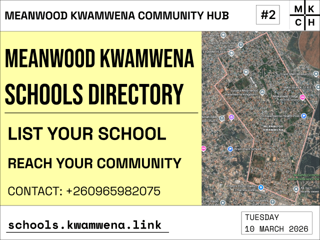
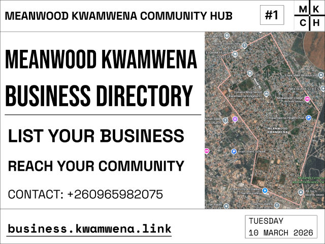
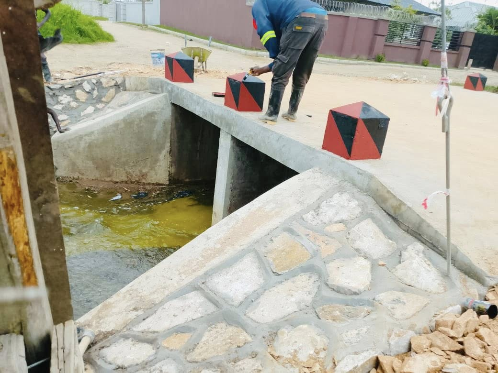
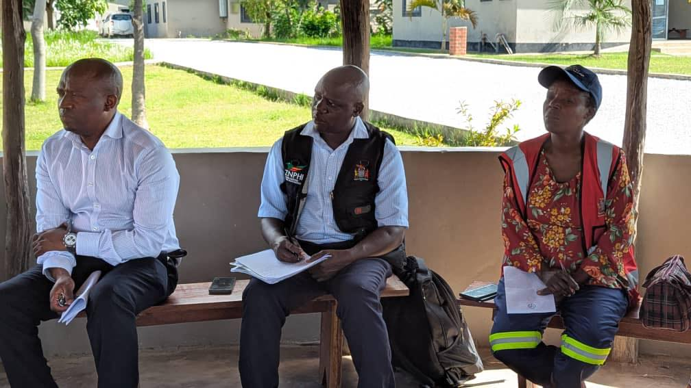

Welcome to the Meanwood Kwamwena Community Hub. Your one stop for everything related to Meanwood Kwamwena Valley.
Tuesday 10 March 2026

We are excited to be putting together a directory of schools in Meanwood Kwamwena! Our goal is to make it easier for families and community members to find information about schools in our area. Each school listing will include the school name, academic programs on offer, address, GPS location, and working hours.
We warmly invite all schools in Meanwood Kwamwena to reach out and help us ensure that your information is accurate and up to date. Your participation means a lot to our community, and we are truly grateful for your support!
Tuesday 10 March 2026

We are excited to be putting together a directory of businesses in Meanwood Kwamwena! Our goal is to make it easier for community members to discover and access the wonderful services available in our area. Each business listing will include the business name, business type, services on offer, contact number, address, GPS location, and working hours.
We warmly invite all businesses in Meanwood Kwamwena to reach out and help us ensure that your information is accurate and up to date. Your participation plays a vital role in supporting our community, and we are truly grateful for your involvement!
Please feel free to contact us on +260965982075.
Wednesday 4 March 2026
ECZ has continued to encourage all registered voters to verify their details in the Provisional Voters register ahead of the general elections which will be held this year. This process will allow you to check for any clerical errors, replace damaged or defaced voters cards and remove deceased members from the voter’s database. The Verification can be done on your mobile phone by dialing *214# followed by option 1 and 1 again. You can also visit your nearest polling station to verify your details.Join Chongwe Municipal Council and Chongwe Community Radio Station on 104.5FM Tomorrow at 16:00 Hours for more insight on this important activity.
This post has been sourced from Chongwe Municipal Council.
Friday 2 January 2026

As we begin the new year we are happy to announce the Box crossing point in Meanwood Kwamwena Phase 3 has been completed and is now open to the public.
During the works, the Local Authority in the company of His Worship The Mayor, Mr. Christopher Habeenzu, District Commissioner Dr. Evans Lupiya, Madido Ward Councillor Ms. Janet Chisenga alongside senior management and community members monitored the progress of the works.
The delegation had expressed satisfaction with the pace and quality of the works and noted the project's expected positive impact on the local community.
The crossing point is expected to help with the smooth flow of water and traffic preventing any possible flooding incidents. The crossing point is located in the central area of Meanwood Kwamwena Phase 3 near the popular bus drop off point called "Green Shop".
This post has been sourced from Chongwe Municipal Council.
Monday 29 December 2025

Chongwe Municipal Council top management, led by the Town Clerk, this afternoon held an interactive meeting with homeowners in Kwamwena to discuss public health issues affecting the area. The meeting was convened at the request of the Kwamwena Home Owners Association.
In his address, the Town Clerk announced plans to drill boreholes that will service ablution blocks in the area, describing the move as a practical response to sanitation and water challenges. He emphasized that improving public health remains a top priority for the Local Authority.
Chongwe Mayor Mr Christopher Habeenzu urged homeowners to work hand in hand with the council and to remain patriotic in protecting public infrastructure and supporting development initiatives. Home Owners Association Chairperson Mr Mutale Mwango commended the council for its responsiveness, noting that the engagement reflected commitment to driving development through collaboration with various partners.
The meeting was attended by District Commissioner Dr Evans Lupiya, Madido Area Councillor Ms Janet Chisenga, Madido Ward Development Committee Chairperson Mr James Kamui and community members, who actively participated in the discussions.
The meeting was held at the Baptist Community Church in Meanwood Kwamwena Phase 4.
This post has been sourced from Chongwe Municipal Council.
Get in touch with Mark Munyaka a representative of Meanwood Kwamwena Community Hub using the following details:
Email: admin@kwamwena.link
Phone: +260965982075